전자기사 (2015-09-19 기출문제)
1과목: 전기자기학
1. 정전용량이 1μF인 공기콘덴서가 있다. 이 콘덴서 판간의 1/2인 두께를 갖고 비유전율 Єr=2인 유전체를 그 콘덴서의 한 전극면에 접촉하여 넣었을 때 전체의 정전용량은 몇 μF이 되는가?
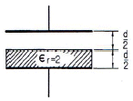
- 2
- 1/3
- 4/3
- 5/3
(정답률: 80%)

2. 공기 중에 있는 반지름 a(m)의 독립 금속구의 정전용량은 몇 F 인가?
- 2πЄ0a
- 4πЄ0a
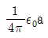
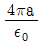
(정답률: 73%)
3. 비오-사바르의 법칙에서 구할 수 있는 것은?
- 전하 사이의 힘
- 자하 사이의 힘
- 전계의 세기
- 자계의 세기
(정답률: 55%)
4. 무한장 선전하와 무한평면 전하에서 r(m) 떨어진 점의 전위는 각각 몇 V 인가? (단, ρL은 선전하밀도, ρs는 평면전하밀도이다.)
- 무한직선 : ρL/2πЄ0, 무한평면도체 : ρs/Є
- 무한직선 : ρL/4πЄ0, 무한평면도체 : ρs/2πЄ0
- 무한직선 : ρL/Є0, 무한평면도체 : ∞
- 무한직선 : ∞, 무한평면도체 : ∞
(정답률: 64%)
5. 전기쌍극자 모멘트 400πε0(Cㆍm)에 의한 점 r=10(m), θ=60°의 전계는 몇 V/m 인가?
- 0.87ar+0.1aθ
- 0.087ar+0.1aθ
- 0.1ar+0.087aθ
- 0.1ar+0.87aθ
(정답률: 70%)
6. 정전계에 관한 식 중 틀린 것은?
- 가우스 법칙의 적분 :
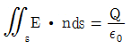
- 전계의 연속성 : div E=ρ
- 라플라스 방정식 :
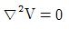
- 포아송의 방정식 :
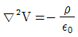
(정답률: 73%)
7. 길이 ℓ(m), 단면적 지름 d(m)인 원통이 길이 방향으로 균일하게 자화되어 자화의 세기가 J(Wb/m2)인 경우 원통 양단에서의 전자극의 세기(Wb)는?
- πd2J
- πdJ
- 4J/πd2
- πd2J/4
(정답률: 62%)
8. 그림과 같은 환상 솔레노이드에서 평균 반지름 r(m), 코일권수 N회에 I(A)의 전류를 흘릴 때 중심 O점의 자계의 세기 H(AT/m)는?
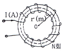
- 0
- 1
- NI/2πr
- NI/2πr2
(정답률: 57%)
9. 자기 감자력(self demagnetizing force)이 평등자화되는 자성체에서의 관계로 옳은 것은?
- 투자율에 비례한다.
- 자화의 세기에 비례한다.
- 감자율에 반비례한다.
- 자계에 반비례한다.
(정답률: 71%)
10. 공기가 채워진 동축케이블에서 내원통의 반지름a, 외원통의 내반지름 b인 무한히 긴 동축원통 도체의 단위 길이당 정전용량은?
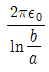
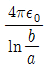
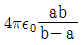
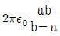
(정답률: 75%)
11. 비투자율 800, 원형단면적 10cm2, 평균 자로 길이 30 cm의 환상철심에 600회의 권선을 감은 무단 솔레노이드가 있다. 이것에 1A의 전류를 흘리면 코일 내부의 자속은 몇 Wb 인가?
- 2.01×10-3
- 3.01×10-3
- 4.01×10-3
- 5.01×10-3
(정답률: 59%)
12. 평행한 왕복 두 도선 간에 전류가 흐르면 전자력은? (단, 두 도선 간의 거리를 r(m)라 한다.)
- 1/r에 비례, 반발력
- 1/r2에 비례, 반발력
- r에 비례, 반발력
- r2에 비례, 반발력
(정답률: 67%)
13. 전계의 세기 E=105 V/m의 균등전계 내에 놓여 있는 전자의 가속도(m/sec2)는? (단, 전자의 전하량 e=1.602×10-19 C, 전자의 질량 m=9.107×10-31 kg이다.)
- 1.759×1016
- 17.59×1016
- 175.9×1016
- 1759×1016
(정답률: 74%)
14. 100회 감은 코일에 코일당 자속이 2초 동안에 2Wb에서 1Wb로 감소했다. 이때 유기되는 기전력은 몇 V 인가?
- 20
- 50
- 100
- 200
(정답률: 70%)
15. 전계의 세기가 30 kV/m인 전계 내에 단위 체적당의 전기쌍극자 모멘트가 1 μC/m2인 물질이 있을 때, 이 물질 내의 전속밀도는 약 몇 μC/m2 인가?
- 1.266
- 1.566
- 10.66
- 12.66
(정답률: 47%)
16. 어떤 막대꼴 철심의 단면적이 0.5m2 길이가 0.8 m, 비투자율이 10이다. 이 철심의 자기저항(AT/Wb)은?
- 1.92×104
- 3.18×104
- 6.37×104
- 12.73×104
(정답률: 77%)
17. 누설이 없는 콘덴서의 소모전력은 얼마인가? (단, C는 콘덴서의 정전용량, V는 전압이다.)
- 1/2CV2
- CV2
- ∞
- 0
(정답률: 39%)
18. z＞0인 영역에는 비유전율 εs1=2인 유전체, z＜0인 영역에는 εs2=4인 유전체가 있으며 유전체 경계면에 전하가 없는 경우 E1=30ax+10ay+20az(V/m)일 때 εs2인 유전체 내에서 전계 E2(V/m)를 구하면? (단, ax, ay, az는 단위 벡터이다.)
- E2=15ax+10ay+20az
- E2=15ax+5ay+20az
- E2=30ax+10ay+10az
- E2=30ax+5ay+10az
(정답률: 70%)
19. 평등 자계를 얻는 방법으로 가장 알맞은 것은?
- 길이에 비하여 단면적이 충분히 큰 솔레노이드에 전류를 흘린다.
- 길이에 비하여 단면적이 충분히 큰 원통형 도선에 전류를 흘린다.
- 단면적에 비하여 길이가 충분히 긴 솔레노이드에 전류를 흘린다.
- 단면적에 비하여 길이가 충분히 긴 원통형 도선에 전류를 흘린다.
(정답률: 69%)
20. 그림과 같이 한 변의 길이가 a(m)인 정삼각형 회로에 전류 I(A)가 흐를 때, 삼각형의 중심에 있어서의 자계의 세기는 몇 A/m 인가?
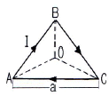
- 9I/2πa
- 6I/2πa
- 6I/4πa
- I/4πa
(정답률: 83%)
2과목: 회로이론
21. 정 K형 필터에서 임피던스 Z1, Z2와 공칭임피던스 K와의 관계는?
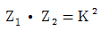
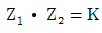
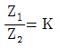
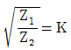
(정답률: 71%)
22. 회로에서 단자 1, 2간의 인덕턴스 L은?
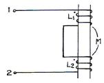
- L1+L2
- L1+L2-2M
- L1+L2+2M
- L1+L2±√L1L2
(정답률: 75%)
23. 다음 그림에서 전달함수
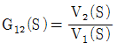
는?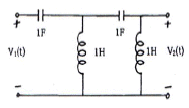
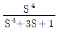
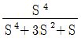
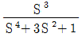
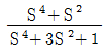
(정답률: 63%)
24. RC직렬 회로에서 일정한 전압 V1을 인가하여 장시간 지난 후 커패시터 C의 전압이 V1이 되었다면 저항 R에서 소비된 에너지는?
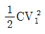
이다. 보다 크다.
보다 크다.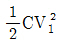
보다 작다.- 무한대가 될 수 있다.
(정답률: 77%)
25. 어떤 회로망의 4단자 정수가 A = 8, B = j2, D = 3 + j2이면 이 회로망의 C는?
- 3 - j4.5
- 4 + j6
- 8 - j11.5
- 24 + j14
(정답률: 83%)
26. 어떤 선형시스템의 전달함수가
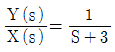
일 때, 이 시스템의 단위계단응답(unit-step response)은?- e3t(t)
- 1/3(1-e3t)u(t)
- 1/3(1-e-3t)u(t)
- e-3tu(t)
(정답률: 78%)
27. 인덕턴스 40mA, 저항 10Ω의 직렬 회로 시정수는 몇 s 인가?
- 0.001
- 0.002
- 0.003
- 0.004
(정답률: 72%)
28. 그림과 같은 4단자 회로망의 4단자 정수(ABCD파라미터)가 옳은 것은?
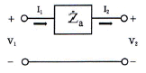
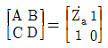
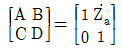
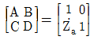
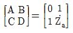
(정답률: 78%)
29. 그림과 같은 인덕터 l의 초기전류가 i(0)일 때 라플라스 변환에 의해서 S의 함수로 표시되는 등가회로를 구하면?
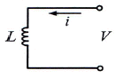
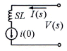
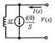
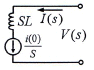
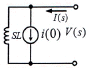
(정답률: 58%)
30. 다음 회로에서 a, b 단자의 합성 저항은 몇 Ω 인가?
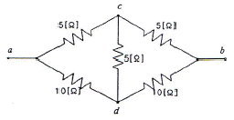
- 1.5
- 2.5
- 3.34
- 6.67
(정답률: 75%)
31. 그림과 같은 회로의 쌍대 회로는?
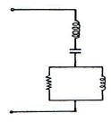
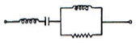
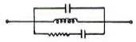
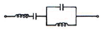
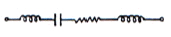
(정답률: 64%)
32. 라플라스 변환식
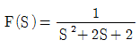
의 역변환은?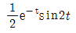
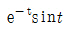
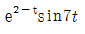
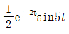
(정답률: 64%)
33. 그림과 같은 회로에 100V의 전압을 인가했을 때 최대전력이 되기 위한 용량성 리액턴스 XC는? (단, R=10Ω, ωL=10ω이다.)
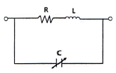
- 10Ω
- 15Ω
- 20Ω
- 25Ω
(정답률: 46%)
34. 교류 전압 220V를 인덕턴스 0.1H의 코일에 인가하였을 때 이 코일에 흐르는 전류는? (단, 주파수는 60Hz이다.)
- 5.84/-90°
- 5.84/0°
- 22/-90°
- 22/0°
(정답률: 72%)
35. 그림과 같은 회로를 t=0에서 스위치 K를 닫을 때 2초 후의 전류는?
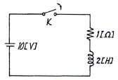
- 3.2A
- 4.6A
- 10/√5A
- 6.3A
(정답률: 60%)
36. 그리과 같은 RC회로에 스텝 전압을 인가하면 출력 전압은? (단, 콘덴서는 미리 충전되어 있지 않은 상태이다.)
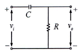
- 아무것도 나타나지 않는다.
- 같은 모양의 스텝 전압이 나타난다.
- 처음엔 입력과 같이 변했다가 지수적으로 감쇄한다.
- 0부터 지수적으로 증가한다.
(정답률: 76%)
37. 그림 (a)와 같은 히스테리시스 곡선을 그리는 비선형 인덕터에 그림 (b)와 같은 전류를 흘릴 때, 그 양단에 나타나는 전압 파형은?
- 삼각파형
- 정현파
- 구형파
- 구형 펄스파
(정답률: 62%)
38. 회로에서 스위치가 오랫동안 개방되어 있다가 t=0에 닫았을 때 바로 직후의 vL(0+)과 vC(0-)로 적절한 것은? (단, t<0에서 vC=3V이다.)
(정답률: 53%)
39. L1=20H, L2=7H인 전자 유도 결합 회로에서 결합계수 k=0.3일 때 상호 인덕턴스 M은 몇 H인가?
- 1.55
- 2.55
- 3.55
- 4.55
(정답률: 65%)
40. 단위 계단함수 u(t)를 라플라스 변환하면?
- 1
- 1/s
- s
- ts
(정답률: 75%)
3과목: 전자회로
41. 발진기에 대한 설명으로 틀린 것은?
- 펄스 발진기는 비정형파 발진기이다.
- 직류를 교류로 변환시키는 기기라 생각할 수 있다.
- 입력신호 없이는 자체적으로 주기적인 신호를 발생시킬 수 없다.
- 출력을 증가시키는 방향에서 볼 때 입력으로 귀환되는 정귀환 방식이다.
(정답률: 64%)
42. 하이브리드 π모델에서 rbb=100Ω, rbe=1kΩ, Cre=100pF일 때 CE 차단주파수 fβ의 값은? (단, Ce≫Cc이다.)
- 1.2MHz
- 1.6MHz
- 2.4MHz
- 3.2MHz
(정답률: 67%)
43. 그림과 같은 회로의 명칭은?
- Trigger 회로
- Clamper 회로
- Slicer 회로
- Clipper 회로
(정답률: 70%)
44. B급 증폭기의 최대효율은 약 얼마인가?
- 25%
- 50%
- 79%
- 100%
(정답률: 69%)
45. 다음 그림에서 점유율(duty cycle)을 나타내는 식은?
- τ/B
- E/B
- τ/T
- E/T
(정답률: 76%)
46. 다음 회로에서 연산증폭기의 (+)입력단자와 (-)입력단자의 전위는? (단, Vin=5V, R1=10kΩ, R2=5kΩ, RL=1kΩ)
- 0V
- 1V
- 2.5V
- 5V
(정답률: 55%)
47. 슈미트 트리거(Schmidt trigger) 회로의 용도에 대한 설명으로 틀린 것은?
- D/A 변환회로로 사용된다.
- 구형파 펄스 발생회로로 사용한다.
- 잡음 등에 의한 오동작을 방지하기 위하여 사용된다.
- 트랜지스터 또는 OP amp의 부품을 이용하여 회로를 구성하여 사용한다.
(정답률: 72%)
48. FET 증폭기에서 이득-대역폭(GB) 곱을 작게 하려면?
- gm을 작게 한다.
- μ를 크게 한다.
- 부하저항을 크게 한다.
- 분포된 정전용량을 작게 한다.
(정답률: 70%)
49. 연산증폭기에 대한 설명으로 틀린 것은?
- 귀환저항이 개방되면 출력이 심하게 잘리는(Clipping) 현상이 발생한다.
- 전압 플로워는 높은 임피던스와 가장 낮은 임피던스를 가진다.
- 입력 바이어스 전류효과는 내부저항으로 보상할 수 있다.
- 폐루프 전압이득은 항상 개루프 전압이득보다 크다.
(정답률: 69%)
50. RC 결합 증폭기에서 구형파 입력 전압에 대해 그림과 같은 출력이 나온다면 이 증폭기의 주파수 특성은?
- 대역폭이 너무 넓다.
- 중역특성이 좋지 않다.
- 저역특성이 좋지 않다.
- 고역특성이 좋지 않다.
(정답률: 70%)
51. 그림과 같은 회로를 무슨 회로라 부르는가?
- 블록킹 발진회로
- 비안정 멀티바이브레이터
- 단안정 멀티바이브레이터
- 쌍안정 멀티바이브레이터
(정답률: 80%)
52. 12비트 연속근사 A/D 변환기가 1MHz의 클럭 주파수에 의해 구동된다고 할 때 총 변환시간은?
- 0.12μs
- 0.42μs
- 12μs
- 24μs
(정답률: 64%)
53. A급 전력증폭기에서 VCEQ=12V이고, ICQ=12mA이면, 최대 신호의 출력전력은? (단, 입력 신호가 없을 때의 트랜지스터의 전력소모일 때로 가정한다.)(오류 신고가 접수된 문제입니다. 반드시 정답과 해설을 확인하시기 바랍니다.)
- 1.2W
- 2.4W
- 6W
- 12W
(정답률: 24%)
54. 다음 회로에서 β=100, IREF=1mA일 때, 전류 I1, I2, I3는 약 몇 mA인가? (단, Q1~Q8의 크기는 모두 같다.)
- 0.019, 0.038, 0.⑤7
- 0.0481, 0.962, 1.443
- 0.7, 1.4, 2.1
- 1, 2, 3
(정답률: 69%)
55. C급 전력증폭기에 대한 설명으로 틀린 것은?
- 출력파형이 심하게 일그러진다.
- 180° 미만에서 도통될 수 있도록 바이어스 한다.
- 고주파 동조증포긱에만 한정적으로 응용된다.
- 입력주기의 긴 기간 동안 도통되므로 전력 손실이 크다.
(정답률: 72%)
56. 트랜지스터 증폭회로의 전류증폭도 Ai=50, 전압증폭도 Av=200 이라고 할 때 전력 증폭도는?
- 10dB
- 20dB
- 30dB
- 40dB
(정답률: 65%)
57. 증가형 MOSFET(E-MOSFET)의 전달 특성을 나타낸 식으로 옳은 것은? (단, VGS(off)는 차단전압, VGS(th)는 임계전압, IDSS는 VGS=0일 때의 드레인 전류, K는 상수)(오류 신고가 접수된 문제입니다. 반드시 정답과 해설을 확인하시기 바랍니다.)
(정답률: 50%)
58. 트랜지스터의 밀러(Miller) 입력 용량 성분에 대한 설명으로 옳은 것은?
- 트랜지스터의 fT가 크면 증가한다.
- 트랜지스터의 부하 저항 값이 커지면 증가한다.
- 트랜지스터의 α차단 주파수가 증가하면 증가한다.
- 트랜지스터의 베이스 분포 저항이 증가하면 매우 증가한다.
(정답률: 32%)
59. 다음 회로에서 입력과 접지사이의 실효 커패시턴스(Cin)를 나타내는 식으로 옳은 것은? (단, 반전 증폭기라고 가정한다.)
(정답률: 47%)
60. 다음과 같은 DTL 논리 회로의 게이트 기능은?
- NAND
- NOR
- AND
- NOT
(정답률: 71%)
4과목: 물리전자공학
61. 3극 진공관과 특성이 유사한 반도체 소자는?
- 다이오드
- pnp 트랜지스터
- n형 JFET
- SCR
(정답률: 69%)
62. 광전효과(photo electric effect)를 설명한 것으로 틀린 것은?
- 임계주파수보다 높은 주파수의 빛이라 하더라도 일정량 이상의 빛의 세기로 조사해야만 광전자 방출이 있다.
- 빛의 세기를 크게 하여도 방출된 전자의 운동에너지는 증가하지 못하고 전자방출의 수만 증가하게 된다.
- 어떠한 금속에서도 각각의 특유한 임계주파수가 있기 때문에 이 이상일 때만 광전자 방출이 있다.
- 방출된 전자의 운동 에너지는 조사된 빛의 주파수에 비례한다.
(정답률: 63%)
63. 애버랜치 항복에 대한 설명으로 옳은 것은?
- 바이어스에 따른 공간전하 영역의 크기 변화에 기인한다.
- 불순물 농도가 매우 높은 PN 접합에서 잘 일어난다.
- 전자의 터널 효과에 의한 현상이다.
- 높은 에너지를 갖는 캐리어의 충돌에 의해 가속된다.
(정답률: 56%)
64. 트랜지스터의 베이스 폭 변조에 대한 설명으로 틀린 것은?
- 컬렉터 전압 VCB가 증가함에 따라 베이스 중성 영역의 폭이 줄어든다
- 베이스 폭의 감소는 베이스 영역의 소수 캐리어 농도의 기울기를 증대시킨다.
- 컬렉터 역바이어스의 증가에 따라 이미터 전류와 컬렉터 전류가 감소한다.
- 베이스 폭이 감소하면 전류증폭률 α가 증대한다.
(정답률: 57%)
65. 광양자가 운동량을 갖고 있음을 증명할 수 있는 것은?
- Zener 효과
- Hall 효과
- Edison 효과
- Compton 효과
(정답률: 77%)
66. 운동 전자가 가지는 파장이 2.7×10-10m/s인 경우 그 전의 속도는? (단, 플랭크 상수 h=6.6×10-34[Jㆍs],전자의 질량 m=9.1×10-31[kg]이다.)
- 2.69×104 m/s
- 2.69×105 m/s
- 2.69×106 m/s
- 2.69×107 m/s
(정답률: 86%)
67. JFET의 특성곡선에 대한 설명으로 옳지 않은 것은?
- 저항성 영역에서는 채널저항이 거의 일정하다.
- 저항성 영역에서는 공간전하층이 매우 좁다.
- 항복영역에서는 VDS를 크게 증가시키면 ID가 급격히 증대한다.
- 포화영역에서는 VDS가 어느 정도 증대되면 채널저항이 급격히 감소된다.
(정답률: 64%)
68. 두 종류의 금속을 접촉했을 때 생기는 접촉 전위차의 극성으로 옳은 것은?
- 일함수가 작은 금속이 양, 큰 금속이 음의 극성을 갖는다.
- 일함수가 작음 금속이 음, 큰 금속이 양의 극성을 갖는다.
- 페르미 준위가 낮은 금속이 양, 높은 금속이 음의 극성을 갖는다.
- 금속 간에는 극성이 발생하지 않는다.
(정답률: 64%)
69. 이미터 접지 증폭회로에서 베이스 전류를 10μA에서 20μA로 증가시켰을 때, 컬렉터 전류의 변화량은? (단, β=100이다.)
- 1mA
- 10mA
- 100mA
- 1A
(정답률: 62%)
70. 300[eV]로 가속된 전자가 0.01Wb/m2인 균등한 자계 중에 자계의 방향과 60°의 각도를 이루며 사출되었을 때 전자가 그리는 궤도의 직경은? (단, 전자의 전하 e=1.602×10-19[C], 전자의 질량 m=9.106×10-31[kg]이다.)
- 약 5.84×10-3[m]
- 약 5.84×10-2[m]
- 약 2.02×10-2[m]
- 약 2.02×10-3[m]
(정답률: 53%)
71. 바랙터(varactor) 다이오드는 어떠한 양(量)들 사이의 비선형적 관계를 이용하는 소자인가?
- 전류와 전압
- 전류와 온도
- 전압과 정전용량
- 주파수와 정전용량
(정답률: 81%)
72. 페르미 디랙(Fermi-Dirac) 분포에 대한 설명 중 옳지 않은 것은?
- 고체 내의 전자는 Pauli의 배타 원리의 지배를 받는다.
- 대부분의 전자는 이 분포의 저 에너지역에 존재한다.
- 금속의 경우 온도에 거의 무관하다.
- 도체가 가열될 때 전자는 분자 비열 용량에 거의 영향을 주지 않는다.
(정답률: 31%)
73. 확산 전류 밀도에 관한 설명으로 옳은 것은?
- 농도의 기울기(gradient)에만 의존한다.
- 농도의 기울기와 이동도에 의존한다.
- 확산계수에만 의존한다.
- 이동도에만 의존한다.
(정답률: 62%)
74. 전자의 운동량(P)과 파장(λ) 사이의 드브로이(De Broglie) 관계식은? (단, h는 Plank 상수이다.)
- P=λh
- P=h/λ
- P=λ/h
- λ=1/Ph
(정답률: 74%)
75. n형 반도체의 Hall 계수는? (단, N은 캐리어의 농도, q는 캐리어의 전하, T는 절대온도, A는 상수이다.)
- -AnqT
(정답률: 50%)
76. 불순물 반도체의 페르미 준위에 대한 설명 중 옳은 것은?
- p형 반도체의 페르미 준위는 금지대 중앙보다 높은 곳에 위치한다.
- 온도가 증가할수록 금지대 중앙으로 접근한다.
- p형 반도체의 페르미 준위는 도너 준위와 일치한다.
- 절대온도 0[K]에서 페르미 준위보다 높은 에너지 준위에서 f(E)=1이다.
(정답률: 71%)
77. 자유전자가 정공에 의해 다시 잡혀서 정공을 채우는 과정을 무엇이라고 하는가?
- 열적 평형
- 확산(diffusion)
- 수명시간(life time)
- 재결합(recombination)
(정답률: 90%)
78. 억셉터 불순물로 사용되는 원소가 아닌 것은?
- 갈륨(Ga)
- 인듐(In)
- 비소(As)
- 붕소(B)
(정답률: 78%)
79. 글로우 방전관의 방전을 안정하게 유지하기 위하여 전원전압 E, 전류 I, 안정저항 R과 관전압 V 사이에 성립하는 관계식은?
- V = IR - E
- V = E - IR
- V = IR + E
- V = E -I/R
(정답률: 70%)
80. 정지하고 있는 질량이 m인 전자를 V[V]의 전위차로 가속시킬 때 전자의 속도(v)를 구하는 식은?
(정답률: 71%)
5과목: 전자계산기일반
81. 다음 중 프로그래머가 사용 가능한 레지스터는?
- 메모리 주소 레지스터(Memory Address Register)
- 메모리 버퍼 레지스터(Memory Buffer Register)
- 스택 포인터(Stack Pointer)
- 명령어 레지스터(Instruction Register)
(정답률: 62%)
82. 데이터를 연산할 때 스택(stack)만 사용하는 명령은?
- 0-주소 명령
- 1-주소 명령
- 2-주소 명령
- 3-주소 명령
(정답률: 67%)
83. 다음의 C 프로그램은 무엇을 입력한 것인가?
- 실수입력
- 정수입력
- 문자열입력
- 문자입력
(정답률: 74%)
84. MPU(micro processing unit)의 처리방식에서 RISC(reduced instruction set computer)의 설명 중 옳지 않은 것은?
- 복잡한 명령을 갖는 프로세서에 비하여 명령수가 적다.
- 하드웨어 실현효율의 최적화가 용이하다.
- 명령 set의 간략화가 가능하므로 고집적화에 유리하다.
- 비교적 복잡한 명령 set를 선택하고 있어 고속 동작이 어렵다.
(정답률: 74%)
85. 다음 karnaugh도에 의한 논리식은?
- A
- B
- AB
- A+B
(정답률: 75%)
86. 순서도의 기호 중에서 다음 기호가 나타내는 것은?
- 판단
- 처리
- 터미널
- 입ㆍ출력
(정답률: 89%)
87. 어셈블리 언어로 프로그램을 작성할 때 절대번지 대신에 간단한 기호 및 명칭을 사용할 수 있는데 이러한 번지를 무엇이라 하는가?
- self address
- symbolic address
- relative address
- symbolic relative address
(정답률: 58%)
88. 다음 설명 중 옳은 것은?
- 10진수 72의 ″9의 보수″는 27이고, ″10의 보수″는 28이다.
- 10진수 72의 ″9의 보수″는 28이고, ″10의 보수″는 27이다.
- 2진수 1010의 ″1의 보수″는 0101이고, ″2의 보수″는 0100이다.
- 2진수 1010의 ″1의 보수″는 0110이고, ″2의 보수″는 0101이다.
(정답률: 70%)
89. 다음의 소자 중에서 전원과 관련된 신호는 제외하고 연결선의 수가 가장 많은 것은?
- 1K × 4 bit DRAM
- 8K × 4 bit DRAM
- 4K × 1 bit DRAM
- 64K × 8 bit DRAM
(정답률: 68%)
90. 다중처리(multi-processing) 시스템에 대한 설명 중 틀린 것은?
- 주기억장치를 여러 개의 CPU가 공유하여 동시에 사용할 수 있다.
- 여러 개의 CPU 중에 한 쪽의 CPU가 고장이 날 경우 다른 쪽의 CPU를 이용하여 업무처리를 계속할 수 있다.
- CPU를 두 개 이상 두고 동시에 여러 프로그램을 수행할 수 있다.
- 두 개 이상의 CPU가 각자의 업무를 분담하여 처리할 수 없다.
(정답률: 60%)
91. 주소 설계 시 고려해야 할 사항이 아닌 것은?
- 주소를 효율적으로 나타낼 수 있어야 한다.
- 주소공간과 기억공간을 독립시켜야 한다.
- 사용자가 사용하기 편리해야 한다.
- .캐시 메모리가 있어야 한다.
(정답률: 66%)
92. 중앙처리장치(CPU)의 3대 구성요소가 아닌 것은?
- 제어장치
- 연산장치
- 입력장치
- 기억부(register)
(정답률: 67%)
93. 캐시 메모리에서 사용되는 매핑(mapping) 방법이 아닌 것은?
- 세트-어소시에티브 매핑
- 어소시에티브 매핑
- 직접 매핑
- 간접 매핑
(정답률: 55%)
94. 다음 마이크로 오퍼레이션이 나타내는 기능은? (단, SP : Stack Pointer, MAR : Memory Address Register, M[addr] : Memory)
- ADD
- PUSH
- RET(return)
- LOAD
(정답률: 36%)
95. 인터럽트의 종류 중 입ㆍ출력장치, 타이밍장치, 전원 등의 용인에 의해 발생되는 인터럽트는?
- 기계 인터럽트
- 외부 인터럽트
- 내부 인터럽트
- 소프트웨어 인터럽트
(정답률: 74%)
96. 지정 어드레스로 분기한 후에 그 명령으로 되돌아오는 명령은?
- 비교 명령
- 조건부 분기 명령
- 서브루틴 분기 명령
- 강제 인터럽트 명령
(정답률: 85%)
97. 다음은 1비트를 비교하는 진리표이다. ( )에 알맞은 값은?
- a : 0, b : 0, c : 0
- a : 1, b : 0, c : 0
- a : 1, b : 0, c : 1
- a : 0, b : 0, c : 1
(정답률: 56%)
98. 계산기 구조에서 기억장치에 RAM을 사용함으로써 계산기에 프로그램 하는데 미치는 영향 중 틀린 것은?
- 프로그램과 자료는 수행되는 순서대로 기억시켜 놓을 필요가 없다.
- 프로그램이 같은 자료를 여러 번 반복하여 이용한다면 이들을 그 사용한 횟수만큼 기억시킬 필요가 없다.
- BRANCH, 조건부 BRANCH, SUBROUTINE의 사용이 가능하다.
- 프로그램 중에서 명령어군과 데이터군의 순서는 반드시 명령어군이 선두에 있어야 한다.
(정답률: 68%)
99. 사용자가 프로그래밍 할 수 없는 ROM은?
- ROM
- PROM
- EPROM
- EEPROM
(정답률: 65%)
100. 16진수 CAF.28을 8진수로 고치면?
- 6255.62
- 6255.52
- 6257.32
- 6257.12
(정답률: 56%)